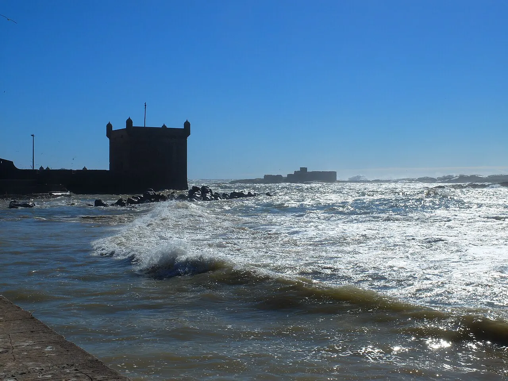
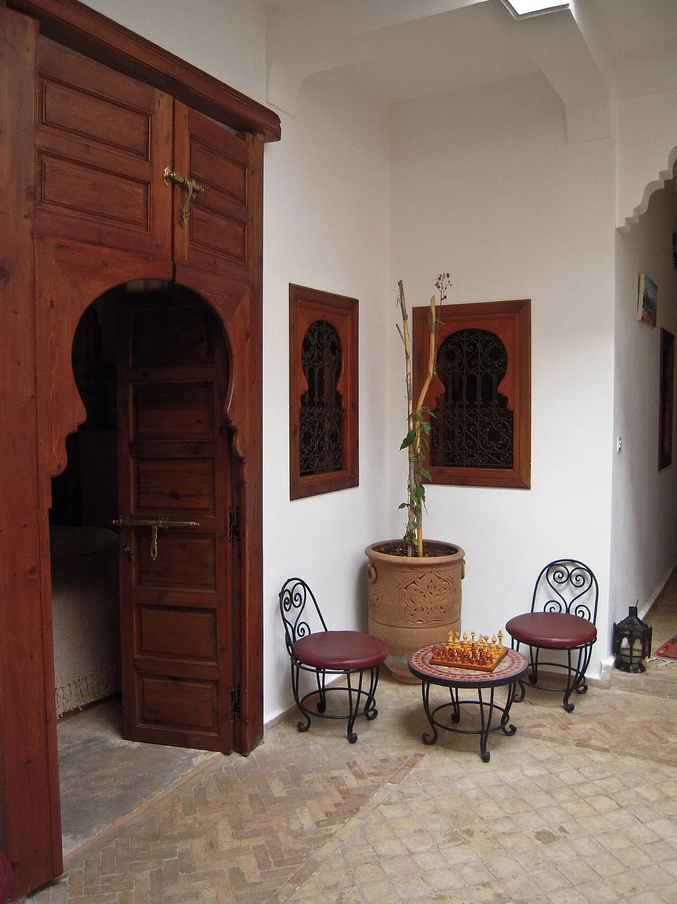

Le classement en un coup d'œil
Nous plaçons Dare-Dare en première position, pour les raisons expliquées plus bas. Les sept autres agences ne sont pas classées entre elles : elles répondent à des besoins différents, et la bonne est celle qui correspond à votre séminaire.
| Rang | Agence | Spécialité | Pour qui |
|---|---|---|---|
| 1 | Agence Dare-Dare | Séminaires et incentives sur mesure, notre propre DMC au Maroc (riads, Agafay, Essaouira) | Équipes et marques qui veulent un séminaire inattendu et un chef de projet dédié |
| · | Attendance MICE | DMC de Marrakech : réunions, conventions, incentives, séminaires, congrès | Entreprises qui veulent un séminaire ou une convention à Marrakech, références de 35 à 187 participants |
| · | No Limits Travel & DMC | DMC de Marrakech : incentive, congrès, séminaires, transferts et hôtels | Entreprises européennes qui veulent un voyage ou un séminaire clé en main |
| · | Travel and Events Morocco | Réceptif de Marrakech : incentives, séminaires, teambuilding, conférences | Grandes équipes (de 30 à 360 participants dans ses références) |
| · | Morocco Select | Événementiel, communication et gestion de destination, basé à Tanger | Groupes et agences qui cherchent un opérateur à Casablanca ou Tanger |
| · | Activ'Travel | DMC MICE, incentive et circuits, avec un volet RSE détaillé | Entreprises qui placent la RSE dans leur cahier des charges |
| · | PK Event | Agence française (Bordeaux) : séminaires, teambuilding, incentives, Maroc en destination phare | PME et ETI qui veulent un interlocuteur français |
| · | INNOV'events | Réseau français de 45 agences locales, page dédiée aux séminaires à Marrakech | Entreprises qui veulent un chef de projet de proximité en France |
Comment nous avons construit ce classement
Nous sommes juge et partie, nous le savons : nous nous classons premiers, et nous expliquons pourquoi. Pour que vous puissiez refaire le raisonnement vous-même, voici les six critères que nous appliquons, et que nous vous conseillons d'appliquer à n'importe quelle agence, nous compris. Chacun vient avec un fait public et une question à poser.
- DMC locale ou sous-traitée. Demandez qui produit sur place. Un opérateur local détient la licence d'exploitation d'agence de voyages marocaine ; des agences l'affichent, comme No Limits (n° ODV-1710, page contact). Le modèle inverse existe aussi : Morocco Select se présente comme partenaire opérationnel de grandes agences (sa page de présentation). Ni l'un ni l'autre n'est un défaut, mais le contrat doit dire qui est responsable du terrain.
- Réseau de prestataires. Lieux, hôtels, tentes du désert, traiteurs, techniciens : demandez les lieux que l'agence a visités elle-même et les options qu'elle peut bloquer. Le cadre : Marrakech pèse 60 % du chiffre d'affaires MICE du Maroc, et Casablanca détient 13 % des infrastructures MICE, Rabat 9 % et Tanger 6 % (TourMaG, 29 novembre 2024). Aucun hôtel marocain ne figure dans le top 10 hôtelier régional du baromètre Cvent 2026 : le choix du lieu se joue donc souvent hors des palaces, dans les riads, les domaines et les camps.
- Transferts, passeport et aérien. La DMC doit gérer les navettes, les horaires de vols groupe et les pièces d'identité. Le pays compte 25 aéroports reliés en direct à 52 pays (TourMaG). Pour les Français, le passeport doit être valide pour toute la durée du séjour : la carte d'identité seule n'est plus acceptée (France Diplomatie, mise à jour du 15 septembre 2026).
- Sécurité et assurance. Demandez l'attestation d'assurance responsabilité civile professionnelle. Pour une agence française, vérifiez l'immatriculation Atout France et la garantie financière. PK Event est la seule agence de cette liste à nommer ses garants sur son site (licence Atout France, garantie APST, RC professionnelle Hiscox). Vérifiez aussi l'assurance rapatriement et annulation du groupe.
- Ramadan et calendrier. Une bonne agence vous prévient avant que vous ne figiez les dates : le Ramadan 2027 devrait commencer vers le 8 février, mais la date est provisoire (voir la FAQ). Le programme, le service et parfois l'offre de boissons changent pendant ce mois.
- RSE chiffrée. Demandez des actions mesurables, pas un slogan : un certificat ou une preuve, un périmètre, les résultats de l'an dernier. Activ'Travel publie des chiffres sur sa page RSE, INNOV'events détaille ses actions et indique une certification ISO 20121 en cours, Attendance affiche des logos ISO sans détail : la question à poser est la même pour toutes.
Pourquoi ces sept agences ? Nous n'avons retenu que des agences et DMC dont le site officiel était ouvert le 25 octobre 2026, actives en 2026, avec des références publiques ou un cadre légal affiché : cinq sont marocaines (Marrakech, Casablanca, Tanger), deux sont françaises (Bordeaux, réseau national). Nous ne portons aucun jugement sur leur travail : nous présentons ce que chacune affiche et ce qui est vérifiable. Certaines agences n'ont pas été retenues faute de site officiel consultable ou de références recoupables ; ce n'est pas un jugement.
Pourquoi nous en premier ? Parce que, sur ces six critères, ce que nous pouvons prouver correspond à ce que cherche d'abord une direction RH ou communication : une DMC qui est la nôtre au Maroc, un chef de projet dédié, une réponse sous 24 h, une assurance attestée et une charte RSE écrite. C'est un choix éditorial assumé, pas une note donnée par un tiers.
Les 8 agences, une par une
Agence Dare-Dare

La Skala d'Essaouira face à l'océan Atlantique. Photo : Goldfinchshuffle, CC BY-SA 4.0.

Cour d'un riad à Marrakech, portes en cèdre sculpté. Photo : Michal Osmenda, CC BY-SA 2.0.
Nous produisons des séminaires, des incentives, des soirées d'entreprise et des lancements, de Paris à Cannes et au Maroc. Au Maroc, nous sommes notre propre DMC, avec une équipe entre Paris et Casablanca : riads privatisés, désert d'Agafay, Essaouira, hôtels, transferts, rooming et soirée de clôture. Le programme type est détaillé dans notre séminaire à Marrakech en 3 jours, et le métier de DMC dans notre guide DMC Maroc.
Pourquoi nous nous classons premiers. Nous construisons et opérons le séminaire nous-mêmes, avec un chef de projet dédié du brief au jour J, des prestataires locaux que nous connaissons et une équipe joignable en français. Nous répondons sous 24 h, avec un devis détaillé poste par poste. Notre charte RSE compte dix engagements, et notre attestation d'assurance responsabilité civile professionnelle est fournie sur demande.
Références vérifiables
- Notre équipe a produit pour Bottega Veneta (trois jours à Venise) et BNP (plus de 200 participants à Reims) : deux séminaires hors du Maroc, que nous citons comme références de séminaires, pas comme références marocaines.
- Notre équipe a produit des événements pour Chanel, Dior, Samsung, Hermès, Longchamp, Mugler, Deloitte, Allianz et Maybelline. Nos programmes marocains sont décrits dans notre guide gratuit du séminaire au Maroc.
Pour qui. Équipes et marques qui veulent un séminaire sur mesure au Maroc, avec un interlocuteur identifié et une production tenue du début à la fin.
Attendance MICE
Attendance MICE (marque Attendance) est une DMC installée à Marrakech, qui indique avoir été créée en 2018. Elle conçoit et organise réunions, conventions, voyages d'incentive, séminaires et congrès dans tout le Maroc, avec un département loisirs depuis 2022. Son site affiche deux logos ISO et une page de développement durable ; cette page ne détaille ni certificats ni engagements, à demander par écrit.
Références vérifiables
- Sa page Nos réalisations présente 36 événements, avec des clients identifiés par secteur et non par nom. Trois exemples :
- Convention annuelle d'un groupe bancaire local, Sol Oasis, Marrakech, 187 participants, 20 et 21 avril 2024.
- Séminaire annuel d'un laboratoire pharmaceutique, Barrière Le Naoura, Marrakech, 35 participants, 22 au 27 septembre 2024.
- Voyage d'incentive d'une société d'ingénierie des sols, Agafay et Marrakech, 60 participants, 14 au 17 novembre 2024.
Pour qui. Entreprises qui veulent un séminaire ou une convention à Marrakech, de quelques dizaines à quelques centaines de personnes.
Site officiel : www.attendance.ma
No Limits Travel & DMC
No Limits Travel & DMC est une DMC installée à Marrakech, qui affiche « depuis 2006 » sur son site, disponible en six langues. Elle propose incentive, congrès et séminaires, transferts et hôtels, teambuilding. Son pied de page affiche une licence d'agence de voyages marocaine (n° ODV-1710) et le logo IATA. Elle mentionne des « caravanes solidaires » et un pôle d'impact social, sans détail.
Références vérifiables
- Sa page clients présente 34 noms, dont Scania, Volvo, Stellantis Finance & Services, Swiss Life Select et Linklaters.
- Des témoignages de clients pour des séjours et séminaires à Marrakech (CIMAT, Complya).
- Ces références ne sont pas datées : nous les citons comme des clients présentés par l'agence.
Pour qui. Entreprises européennes qui veulent un voyage ou un séminaire clé en main avec un opérateur local.
Site officiel : www.nolimits.ma
Travel and Events Morocco
Travel and Events Morocco (la page se titre « Travel Events And Logistics Morocco ») est un réceptif installé à Marrakech, qui indique plus de quinze ans d'expérience. Il organise incentives, séminaires, teambuilding, conférences et dîners pour des groupes d'entreprise. Son site ne mentionne ni RSE ni assurance : ces points se demandent par écrit.
Références vérifiables
- Sa page Nos réalisations donne des projets datés. Nous ne reprenons que titre, client, mois et nombre de participants ; les lieux ne sont pas toujours précisés :
- Paytech Summit, Ingenico Group, février 2023, 360 participants, 4 nuits.
- Voyage incentive, Grupo Bimbo, avril 2023, 350 participants, 7 nuits.
- Séminaire teambuilding, OCP et Université Mohammed VI, juillet 2023, 30 participants.
Pour qui. Grandes équipes et groupes étrangers qui organisent un séminaire ou un incentive de plusieurs centaines de personnes.
Site officiel : www.travelandevents-morocco.com
Morocco Select
Morocco Select est basée à Tanger, avec des bureaux à Casablanca, Tanger, Paris et Londres (page de présentation). Elle se présente comme partenaire opérationnel de grandes agences et de multinationales pour leurs projets au Maroc : événementiel, communication et gestion de destination. Son année de création n'est pas indiquée. C'est la seule agence de cette liste qui couvre le nord du pays.
Références vérifiables
- Son portfolio présente des clients et des types de projets, sans lieu ni date : Sanofi (convention et séminaire), Danone (séminaire et teambuilding), Holmarcom Group (séminaire institutionnel), Renault (convention), Bank of Africa (soirée corporate).
- Le portfolio n'étant pas daté, nous le citons comme clients présentés par l'agence.
Pour qui. Agences et groupes internationaux qui cherchent un opérateur local, notamment à Casablanca et Tanger.
Site officiel : www.moroccoselect.com
Activ'Travel
Activ'Travel (Activ'Travel DMC Morocco) est une DMC MICE qui propose incentive, événements d'entreprise et circuits de luxe. Sa présentation cite Casablanca et Marrakech, son site principal seulement Marrakech. Son volet RSE est le plus détaillé de la liste : 18 salariés à temps plein (8 hommes, 10 femmes), une ancienneté moyenne supérieure à 10 ans, une plantation d'oliviers dans le Haut Atlas avec les clients et des projets avec des associations villageoises (page RSE).
Références vérifiables
- Les pages que nous avons consultées ne nomment ni client ni événement daté. Le détail de l'offre séminaires se trouve sur sa page MICE.
- Aucune assurance ni certification n'y est mentionnée : à demander par écrit.
Pour qui. Entreprises qui placent la RSE dans leur cahier des charges, par exemple pour un incentive solidaire.
Site officiel : www.activ-travel.net
PK Event
PK Event (Peritrek) est une agence française installée à Mérignac, près de Bordeaux. Elle organise séminaires, teambuilding, soirées d'entreprise et incentives en France et à l'étranger, avec le Maroc en destination phare. Son site affiche une licence d'agence de voyages Atout France (n° IM024100001), une garantie financière APST et une RC professionnelle Hiscox. Comme pour toute agence installée hors du Maroc, demandez qui assure le terrain sur place.
Références vérifiables
- SAMSIC : séminaire à Marrakech et soirée dans le désert d'Agafay pour plus de 200 collaborateurs, du 7 au 9 octobre (année non précisée) : page projet.
- Soirée d'entreprise dans le désert marocain pour une start-up parisienne : page projet.
- Présentation de son offre Maroc : page Maroc.
Pour qui. PME et ETI, surtout en Nouvelle-Aquitaine, qui veulent un interlocuteur français pour un séminaire au Maroc.
Site officiel : www.peritrekevent.com
INNOV'events
INNOV'events, marque de S2 Développement, est un réseau français de 45 agences locales, créé en 2010 selon son site, avec une page dédiée aux séminaires à Marrakech. Elle affiche des actions RSE (transferts mutualisés, restauration de saison, filières locales, bilan d'actions), une certification ISO 20121 indiquée comme en cours, et une immatriculation de voyagiste.
Références vérifiables
- Une note de 4,8 sur 5 pour 925 avis, d'après le site, avec des avis datés d'avril à mai 2026.
- Aucune réalisation au Maroc n'est nommée sur les pages que nous avons consultées.
Pour qui. Entreprises qui veulent un chef de projet de proximité en France et un séminaire à Marrakech dans le même dispositif.
Site officiel : www.agence-evenementielle-innovevents.fr
Quelle agence pour quel séminaire ?
Si vous n'avez le temps de lire qu'un paragraphe, c'est celui-ci. Il croise votre séminaire avec les spécialités affichées par les agences.
| Votre séminaire | Agences à regarder |
|---|---|
| Un séminaire sur mesure, avec un riad privatisé ou une soirée dans le désert, et un chef de projet dédié | Agence Dare-Dare |
| Une convention ou un séminaire annuel à Marrakech, de quelques dizaines à quelques centaines de participants | Attendance MICE, No Limits |
| Un groupe de plusieurs centaines de personnes | Travel and Events Morocco |
| Un projet à Casablanca ou à Tanger, ou un opérateur local pour votre agence | Morocco Select |
| Un incentive avec une démarche RSE détaillée | Activ'Travel |
| Un interlocuteur installé en France | PK Event, INNOV'events |
Photo : via Pinterest.
Comment choisir votre agence
Quelle que soit l'agence, le même chemin évite les mauvaises surprises. Cinq gestes, dans cet ordre.
- Écrivez votre brief avant d'appeler. Objectif, nombre de participants, dates, ville, enveloppe. Notre modèle de brief tient en dix questions.
- Fixez la ville et les dates. Notre guide gratuit du séminaire au Maroc détaille les saisons, le Ramadan 2027, les vols et les formalités. Pour Marrakech, voyez notre page agence événementielle à Marrakech et le programme type en 3 jours.
- Demandez qui produit sur place. DMC locale ou partenaire : les deux existent, mais le contrat doit nommer le responsable du terrain, des transferts et de la sécurité. Notre guide DMC Maroc explique le métier.
- Demandez les engagements par écrit. Attestation d'assurance responsabilité civile professionnelle, licence d'exploitation ou immatriculation, charte ou certification RSE. Pour mesurer l'impact du voyage, notre calculateur d'empreinte carbone donne un premier ordre de grandeur, vols compris.
- Testez la réactivité et nommez l'interlocuteur. La façon dont l'agence répond à votre brief annonce la façon dont elle répondra à des centaines de kilomètres de Paris. Demandez qui sera votre chef de projet, et quel est le plan B en cas d'aléa.
Photo : via Pinterest.
Questions fréquentes
Faut-il un visa ou un passeport pour un séminaire au Maroc ?
Pour les Français, le passeport doit être valide pour toute la durée du séjour : la carte d'identité seule n'est plus acceptée. Un billet retour et des moyens de subsistance sont exigés, et le séjour est limité à 90 jours sans prolongation (France Diplomatie, mise à jour du 15 septembre 2026). Pour les autres nationalités, la règle dépend de chaque participant : vérifiez-la sur les portails officiels marocains avant le départ. Nous demandons les copies de passeport six à huit semaines avant le départ.
Quelles sont les dates du Ramadan 2027 au Maroc ?
Elles sont provisoires. Le Ramadan 2027 devrait commencer vers le lundi 8 février, et l'Aïd el-Fitr tomber le 9 ou le 10 mars. Le Maroc annonce les dates officielles après l'observation du croissant lunaire, à confirmer en février 2027. Le programme et le service changent pendant le mois, et la vente de boissons alcoolisées peut être restreinte dans les établissements touristiques. Pour un séminaire en février ou mars, nous conseillons la deuxième quinzaine de mars, après l'Aïd, ou avril. L'abus d'alcool est dangereux pour la santé, à consommer avec modération.
Quelle est la meilleure saison pour un séminaire au Maroc ?
Mars à mai est notre fenêtre préférée, puis septembre à novembre. De juin à septembre, Marrakech dépasse souvent 35 °C : la côte atlantique (Essaouira, Casablanca) est plus clémente. De décembre à février, les journées sont claires mais les nuits froides, surtout dans le désert d'Agafay, où un dîner dehors demande couvertures, braseros et un plan B sous tente fermée.
Un séminaire au Maroc est-il sûr, et quelle assurance demander ?
France Diplomatie (page Sécurité, mise à jour du 15 septembre 2026) déconseille la frontière mauritanienne et demande la prudence au sud de la frontière algérienne et au Sahara occidental ; Marrakech, l'Agafay, Casablanca, Essaouira et Tanger ne figurent pas parmi les zones citées. Demandez à l'agence son attestation d'assurance responsabilité civile professionnelle, et, si elle est française, son immatriculation Atout France avec garantie financière. Vérifiez aussi l'assurance rapatriement et annulation du groupe. Chez Dare-Dare, l'attestation d'assurance est fournie sur demande.
Faut-il passer par une DMC locale ou une agence française ?
Les deux modèles existent. Une DMC locale produit sur place, détient la licence marocaine et connaît ses prestataires. Une agence française apporte un interlocuteur proche, mais s'appuie en général sur un partenaire local. Demandez dans les deux cas qui est responsable du terrain et ce que dit le contrat. Chez Dare-Dare, nous sommes notre propre DMC au Maroc, avec une équipe entre Paris et Casablanca.
Combien de temps à l'avance réserver un séminaire au Maroc ?
Comptez quatre à six mois entre le brief et le départ. Moins est possible, mais les lieux les plus demandés (riads, camps du désert, hôtels en haute saison) partent d'abord, surtout de mars à mai et de septembre à novembre. Autour de l'Aïd el-Fitr et de l'Aïd al-Adha, prestataires et transports sont très sollicités : évitez ces dates ou réservez très tôt.